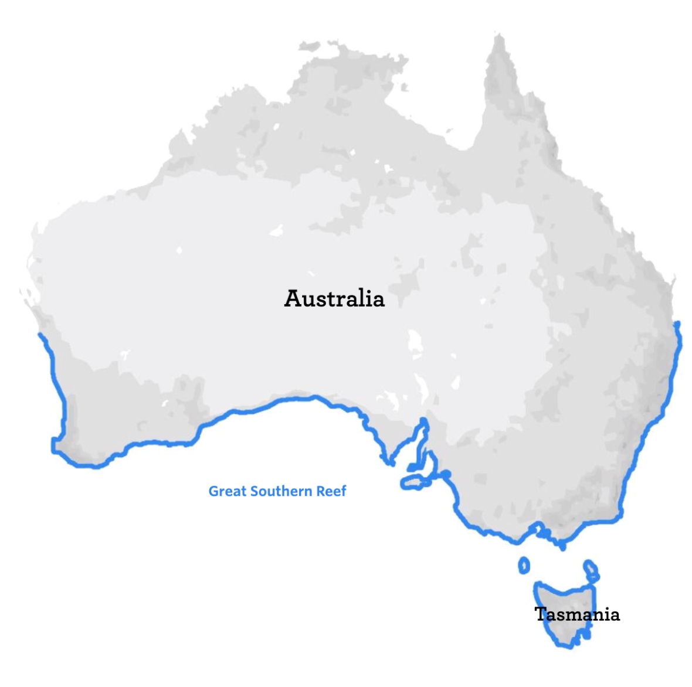

Week 2: Study design
1 What you need this week
- Workshop 2: Tidy data
- Intertidal site images
- Species identification guide
2 Introduction
Today we will be focusing on data collection and how to prepare your data for analysis. You will be working in groups of at least 4 students in this practical.
Things to prepare
- Review Lecture 2a. These cover key ideas for today’s practical. If you missed the lecture, please read through the material beforehand so you are prepared (it beats doing nothing and waiting for the demonstrator to catch up with you).
- Lab notebook. You received a blank notebook in Week 1. Use it to jot down your observations, models, and data collection. This will help you keep track of your work. Note: it’s not compulsory, but good practice.
- A computer with spreadsheet software (such as Excel, Google Sheets, or Numbers) and the statistical software of your choice. You can use your own laptop or a lab computer. iPads are fine if you plan to use R, but make sure you know how to use Posit Cloud.
Learning outcomes
By the end of this practical, you should be able to:
What to submit
- A (simple) study design based on your observations of the photos provided, documented on Google Docs. This will be sighted by a Demonstrator during the practical before you can proceed to the next exercise.
- Data in the form of a tidy spreadsheet – your collected data will need to be submitted to Google Drive. This submission is not a formal assessment (it is not graded), but it is essential for the next practical, so please make sure you submit it.
3 Workshop
The Week 2 workshop linked above will go through Tidy data principles. Tidy data is a way of structuring your data so that it is easy to work with and analyse. It is a key principle in data analysis and will help you avoid common pitfalls when working with data.
4 Exercise 1 – Modelling from observations
Background
Images are commonly used to quantify patterns in biology, from molecules to ecosystems. In ecology, for instance, satellite images and aerial photographs are used in some ecological studies to quantify patterns of distribution and abundances of animals and plants across habitats.
Here you will explore experimental design, model formulation and data analysis by collecting data from available images and use both evidence and logic to work out how to explain the patterns you observe.
Work in groups – You will be working in groups of 3-4 students. Your task is to observe the images provided and formulate a model that explains the patterns you observe. You will then create a study design that will allow you to test your model.
Remember, the best models are often the simplest. Focus on logical and critical thinking when designing your study. The sampling design certainly the bigger focus here in this short exercise. Keep this in mind as you work through the exercise!
Do not proceed to Exercise 2 until you have completed this exercise, and a Demonstrator has sighted your study design.
Getting started
You are provided with random, representative, replicate photographs of a common marine habitat that spans > 8,000 km of the Great Southern Reef, i.e. the coastline along the bottom half of Australia – intertidal rocky shores (Fig 1).
Use the intertidal site images linked in What you need this week, which include background information.
Using these images and the species identification guide, formulate a model and a (testable) hypothesis. You will then think about what data you need to collect to test your hypothesis. See below for further details.
Study design
Focus on the sampling design as you work on your model. Keep this in mind as you work through the exercise. If overwhelmed, think simple – the focus is on working through these sampling design considerations explained in this week’s lectures:
- Control
- Replication
- Randomisation
Have a clear model in mind before collecting data. The model determines your sampling strategy and the type of data you need. Consider the following:
- What is the point of your model? Think about the biological question you are trying to answer, and the kinds of data you need to collect to answer it. Remember that the model is a simplified representation of reality, so it should be as simple as possible while still capturing the essence of the question you are trying to answer.
- Think of how you would collect data to test your model. What are the variables you need to measure? How would you measure them?
- Scrutinise your images with the model in mind. Can the data be collected representatively from the images? Are there issues of replication or confounding variables that you need to consider?
- Do you have the time and resources to complete the study in the time frame provided, i.e. by the end of next week?
- What is your backup plan if data assumptions are not met?
While you may not have all the answers right away, it’s important to have a rough idea of what you want to do, such as comparing groups, measuring correlation, or creating a linear model.

Task
A Google Docs page is available for you as a guide to record your responses. On the document, select File > Download to save the file to use in your group. Note that this document is a guide and you may choose to use a different format to record your progress.
Then, address your study design by answering the following questions:
- Model and hypothesis: What is your model and hypothesis? What are you trying to test and how will you test it? What would the plot look like?
- Variables: What are the variables you need to measure? What types of variables are they (e.g. continuous, categorical)?
- Data collection: How would you collect data to test your model? What are the potential issues you need to consider?
Note that this example will probably not work for the images, but it should give you an idea of what is expected. Also note that you do not need to follow the template exactly!
- Project title: Does rock size influence the number of species that can be found on a rocky shore?
- Group name: Schist happens
- Model and hypothesis:
- We hypothesise that the number of species on the rocky shore is positively correlated with the size of the rocks.
- We will model the relationship between the number of species and the size of the rocks using a linear model.
- The plot is expected to be a scatter plot with the number of species on the y-axis and the size of the rocks on the x-axis.
- Variables:
- We need to measure the number of species and the size of the rocks.
- Number of species is an integer variable.
- Size of the rocks is continuous variable.
- Sampling design, control, replication, randomisation:
- For each image, we will divide it into a 10x10 grid.
- 3 random quadrats will be selected from each grid.
- The size of all visible rocks will be measured in each quadrat.
- The number of unique species in each quadrat will also be counted.
- We will then calculate the average size of rocks and the average number of species for each image to minimise pseudoreplication.
- Possible confounding could arise from the presence of seaweed, which could affect the number of species present.
- If the number of species is too high to count, we will group species into functional groups and count the number of functional groups instead.
- Backup plan:
- If the assumptions of the linear model are not met, we will transform the data, otherwise we will attempt a non-linear model.
5 Exercise 2 – data entry
It is time to sample data from the images. While doing so, consider how you might minimise bias in your sampling. Also, if have not already done so, plan for time:
- How long will it take to sample data from each image?
- How many images will you sample from?
- How many samples will you take from each image?
Enter your data into a spreadsheet as soon as you have them. You can use any spreadsheet software you like (e.g. Excel, Google Sheets, Numbers). Google Sheets is easiest if everyone in your group is sampling and entering data at the same time as it is easy to set up a shared spreadsheet, but you may also share the same computer and enter data one at a time.
If more than one person is entering data, will it influence the results? Why or why not? Think about how you can reduce the impact of this.
To make your life easier, recall the tidy data principles outlined in the workshop:
- Each variable must have its own column.
- Each observation must have its own row.
- Each value must have its own cell.
The table below is tidy:
| Person | Treatment | Count |
|---|---|---|
| John | A | 5 |
| Mary | A | 3 |
| Jane | A | 2 |
| John | B | 6 |
| Mary | B | 4 |
| Jane | B | 5 |
The table below is not (although it may look “better” to you). Why?
| Person | Treatment A | Treatment B |
|---|---|---|
| John | 5 | 6 |
| Mary | 3 | 4 |
| Jane | 2 | 5 |
Note: tidy data will reduce the amount of time you spend cleaning your data during data analysis, but you can also choose not to follow these principles if you prefer.
6 Submit your data
Submit your data to Google Drive as an Excel file. Your group will be using this data next week so make sure that we have it!
7 End of practical
Don’t forget to submit your data! You should also start to look at the projects available for Report 1, as you will sign up for one of them next week to work on Report 1.
8 Snail competition reminder
The BIOL2022 snail-collecting competition remains open until the end of Week 4. You can return snails on any day the BIOL2022 laboratories are running, so check the current laboratory schedule on Canvas before coming in.
Read the snail collection and care guide before collecting anything. The current competition and prize details will be provided on Canvas.